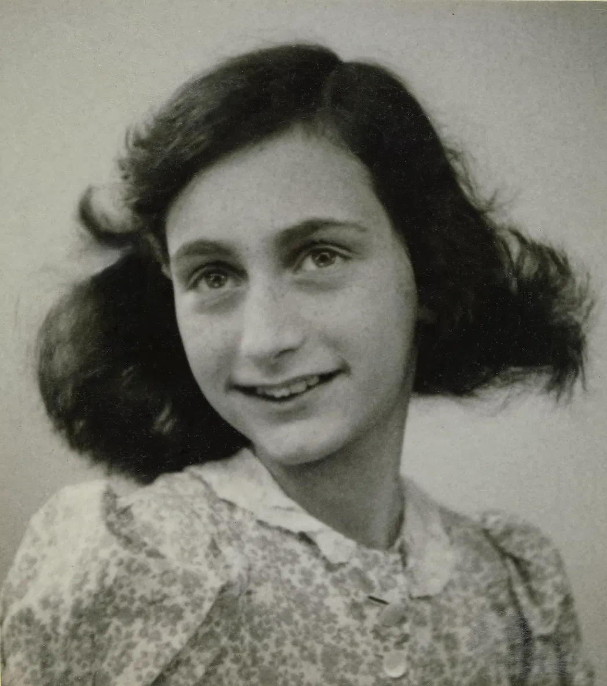
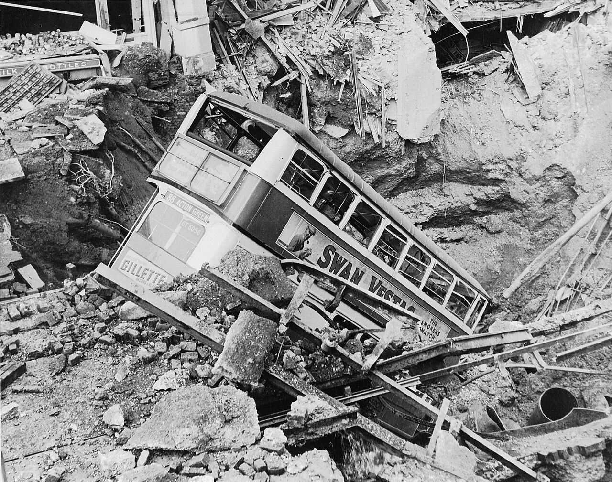
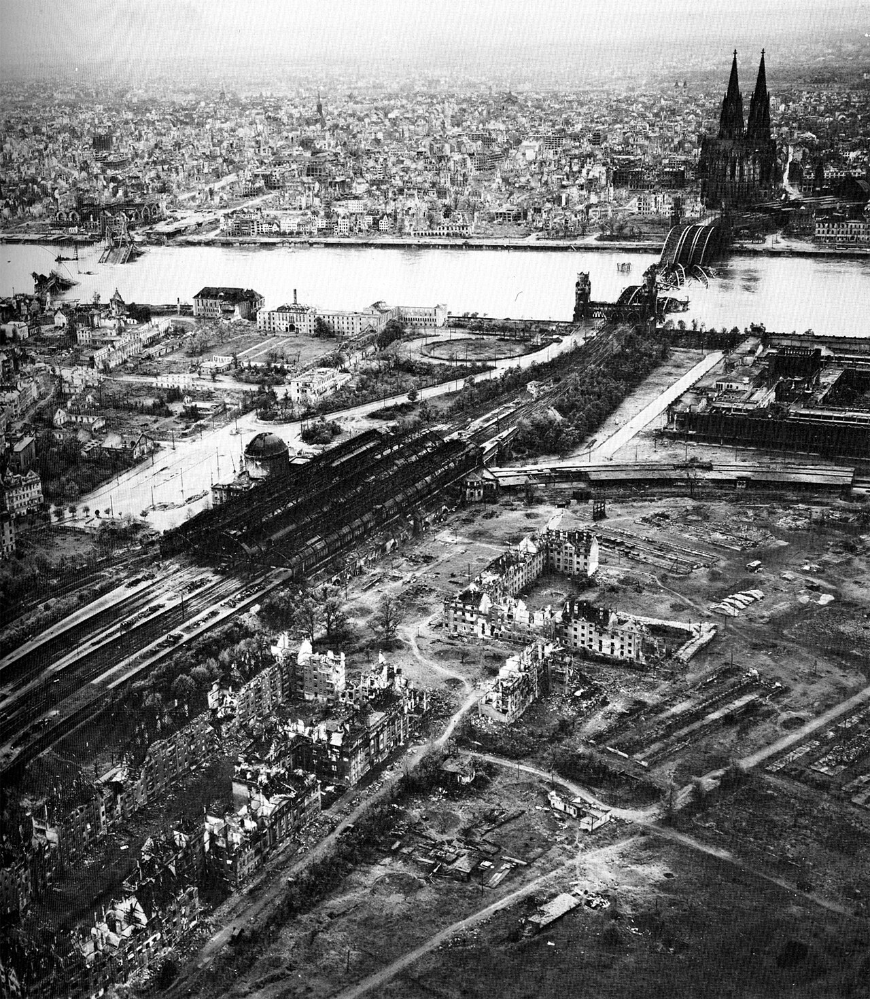
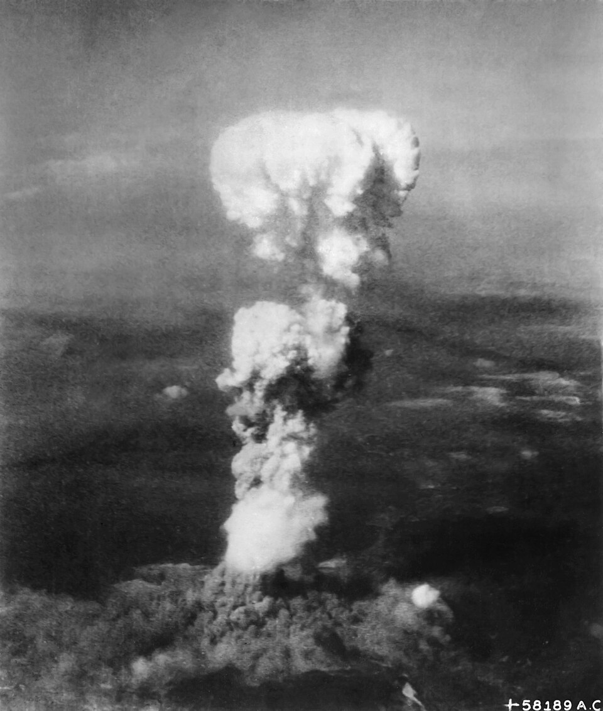
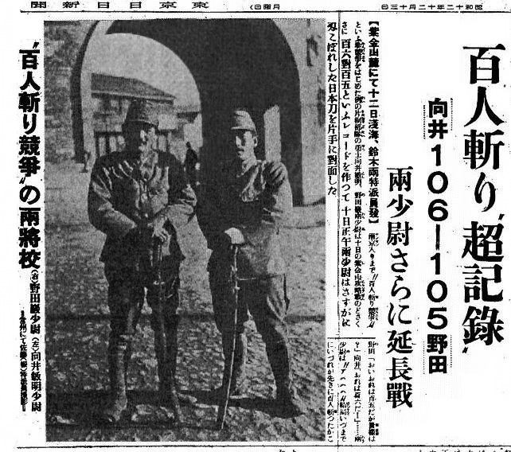
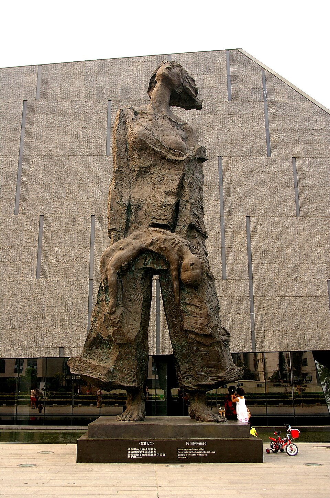
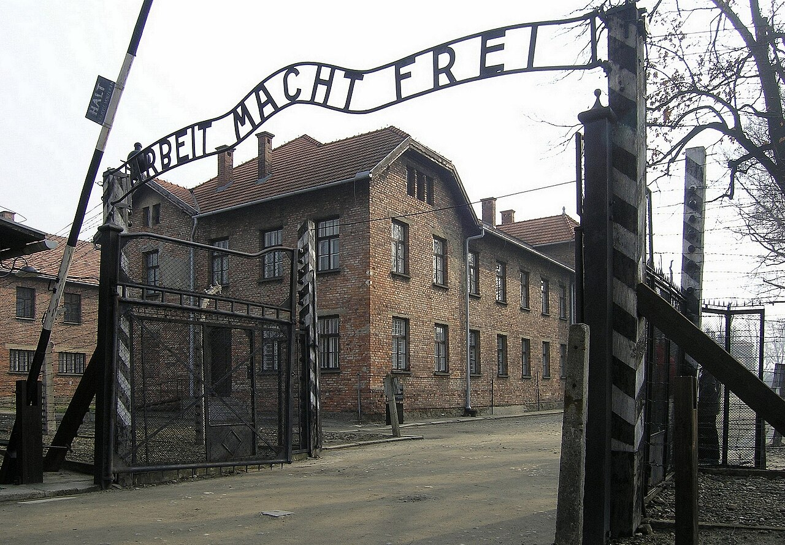
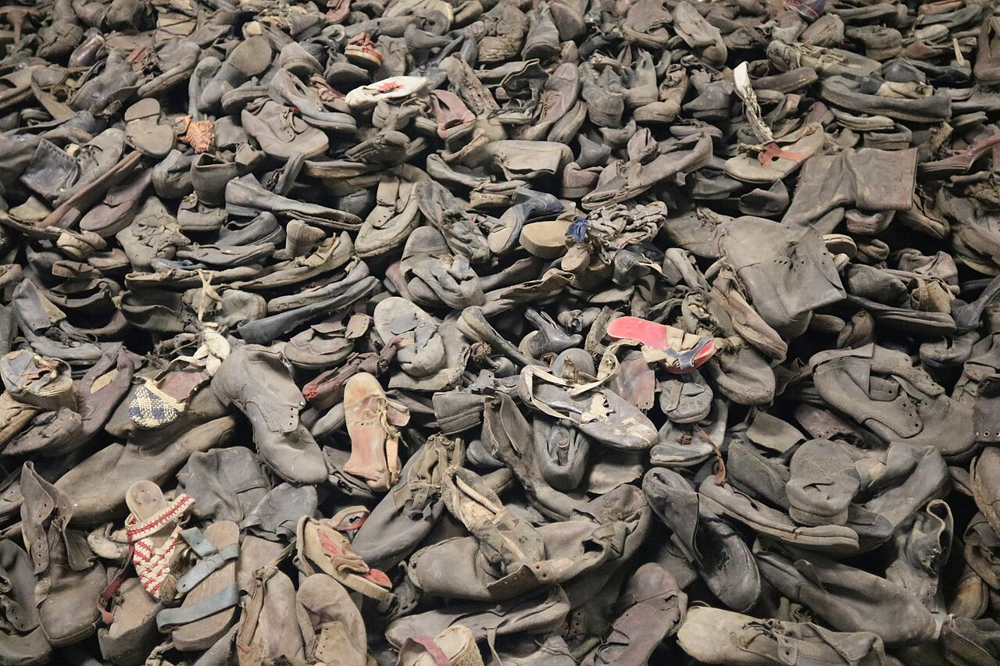
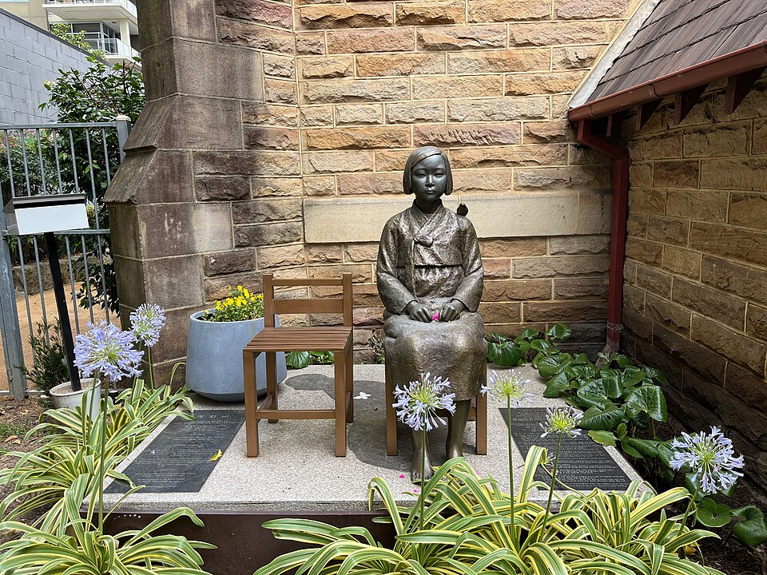

Ⅵ. 세계 대전과 사회 변동 · 02. 전쟁 범죄에 맞선 평화 유지 노력
두 차례 세계 대전 중에
전쟁 범죄가 발생하다
전쟁은 군인만의 싸움이 아니었습니다. 세계 대전 동안 수많은 민간인이 목숨을 잃었고, 인간의 존엄을 짓밟는 범죄가 일어났습니다. 오늘은 그 사실을 살펴보고, 우리가 왜 이것을 기억해야 하는지 생각해 봅니다.
학습 목표
- 1두 차례 세계 대전 중에 일어난 대량 학살의 사례를 설명할 수 있다.
- 2두 차례 세계 대전 중에 벌어진 인권 침해의 실상을 말할 수 있다.
STEP 1 · 도입 (5분)
한 소녀의 일기

“나는 지금까지 누구에게도 털어놓지 못한 모든 것을 너에게 털어놓을 수 있기를 바라. 그리고 네가 내게 큰 위로와 버팀목이 되어 주기를 바라.”
— 안네 프랑크, 『안네의 일기』 첫머리(1942년 6월 12일)
안네는 13살 생일에 받은 일기장에 이 글을 썼습니다. 그리고 약 2년 동안 가족과 함께 암스테르담의 한 건물 뒤편 비밀 공간에 숨어 지냈습니다.
안네는 13살 생일에 받은 일기장에 이 글을 썼습니다. 그리고 약 2년 동안 가족과 함께 암스테르담의 한 건물 뒤편 비밀 공간에 숨어 지냈습니다.
안네의 가족은 왜 숨어 살아야만 했을까요?
생각을 나눈 뒤 열어 보기
안네의 가족은 유대인이었습니다. 나치스가 점령한 지역에서 유대인은 붙잡혀 수용소로 끌려갔습니다. 1944년 은신처가 발각된 뒤 안네는 수용소로 끌려갔고, 1945년 베르겐벨젠 수용소에서 15살의 나이로 숨졌습니다. 안네의 일기는 오늘 배울 홀로코스트의 참상을 전하는 기록입니다.
STEP 2 · 전개 ① (10분)
민간인의 희생
19세기에 발달한 과학 기술과 대량 생산 체제는 무기를 만드는 데에도 쓰였습니다. 두 차례 세계 대전에서는 전차, 폭격기, 독가스 같은 대량 살상 무기가 등장했고, 군대와 민간인을 가리지 않는 무차별 공격이 이어졌습니다.
과학 기술 발달→대량 살상 무기 등장→무차별 공격→민간인 희생 급증



약 5,000만 명제2차 세계 대전 희생자 (민간인 포함)
1945. 8.미국이 일본 히로시마(6일)·나가사키(9일)에 원자 폭탄 투하
강제 동원식민지 사람들이 전쟁에 강제로 끌려감
인권 침해도 함께 일어났어요
- 식민지 사람들이 군인, 노동자 등으로 전쟁에 강제 동원되었습니다.
- 독일과 일본은 사람을 대상으로 생체 실험을 했습니다. (예: 나치스 수용소의 의학 실험, 일본군 731부대)
왜 제2차 세계 대전에서는 군인보다 민간인이 더 많이 희생되었을까요?
STEP 3 · 전개 ② (15분)
전쟁 범죄의 발생
세 가지 사례를 하나씩 눌러 보며 배경과 내용을 정리해 봅시다.
난징 대학살 1937년 12월 · 중국 난징


- 배경
- 1930년대 일본이 적극적으로 대외 침략에 나섰고, 1937년 중일 전쟁이 일어났습니다.
- 내용
- 일본군이 당시 중국의 수도 난징을 점령하여 도시 전체를 파괴했습니다.
- 중국군 포로뿐 아니라 여성과 아이 등 수많은 민간인을 폭행하고 살해했습니다.
- 생각
- 전쟁 중이라도 포로와 민간인은 보호받아야 합니다. 난징 대학살은 이 원칙을 무너뜨린 대표적인 전쟁 범죄입니다.
홀로코스트 1930년대 후반~1945 · 독일과 독일 점령 지역


- 의미
- 나치스가 유대인을 대상으로 저지른 대규모 학살 (약 600만 명의 유대인이 희생)
- 배경
- 독일에서 히틀러가 정권을 장악한 뒤 유대인 차별법을 만들었습니다.
- 내용
- 유대인 주거 지역(게토)을 만들어 유대인을 사회에서 격리했습니다.
- 독일과 점령 지역에 유대인 수용소를 설치하여 강제 노동을 시켰고, 생체 실험을 하거나 가스실로 끌고 가 살해했습니다.
- 폴란드의 아우슈비츠 수용소에는 지금도 가스실, 철조망 등이 남아 그 참상을 전합니다.
일본군 ‘위안부’ 1930년대~1945 · 일본군 점령지와 전쟁 지역

- 배경
- 1930년대 초부터 일본은 일본군이 점령하거나 전투를 벌이는 지역 곳곳에 군대 위안소를 설치했습니다.
- 내용
- 한국, 중국, 필리핀, 인도네시아 등 여러 점령지에서 수만 명의 여성을 끌고 가 일본군 ‘위안부’로서의 삶을 강요하여 여성의 인권을 짓밟았습니다.
- 패전 후 일본은 이 사실을 숨기려 했고, 살아남은 여성들은 오랫동안 정신적·육체적 상처 속에서 힘든 삶을 살아야 했습니다.
- 생각
- 1991년 김학순 할머니가 처음으로 피해 사실을 공개 증언하면서 이 문제가 세상에 널리 알려졌습니다. 피해자들의 용기 있는 증언이 기억의 시작이었습니다.
한눈에 보는 흐름
- 1933히틀러와 나치스가 독일에서 정권 장악
- 1937중일 전쟁 발발 → 12월 난징 대학살
- 1939독일의 폴란드 침공으로 제2차 세계 대전 발발
- 1940년대나치스 수용소에서 유대인 대량 학살 / 일본군 위안소 확대
- 1945원자 폭탄 투하, 독일·일본 항복으로 전쟁 종결
STEP 4 · 정리 (7분)
빈칸을 채워 정리해 봅시다
1. 두 차례의 세계 대전 중 의 등장으로 무차별 공격이 이어졌다.
2. 미국의 투하로 일본의 수많은 사람이 목숨을 잃었다.
3. 일본군이 을/를 점령하여 포로와 민간인을 학살하였다.
4. 이/가 유대인을 대상으로 저지른 대규모 학살을 (이)라고 한다.
5. 일본은 점령지 곳곳에 군대 위안소를 설치하고 수만 명의 여성에게 일본군 로서의 삶을 강요하였다.
STEP 5 · 확인 (5분)
알맞은 것을 골라 보세요
Q1. 제2차 세계 대전 중에 미국이 ( ? )에 원자 폭탄을 떨어뜨려 수많은 사람이 목숨을 잃었다.
Q2. 독일의 나치스는 수용소를 설치하여 ( ? )을 대상으로 대규모 학살을 벌였다.
Q3. 난징 대학살 때 일본군은 중국군 포로뿐 아니라 여성과 아이 등 민간인도 살해하였다.
Q4. 세계 대전 중 식민지 사람들은 자신이 원할 때만 전쟁에 참여하였다.
STEP 6 · 생각 나누기 (3분)
전쟁 범죄를 기억해야 하는 이유는 무엇일까?
오늘 배운 전쟁 범죄 중 하나를 골라, 이를 알리는 짧은 글을 써 봅시다.
이 화면에서 쓴 글은 지금 사용하는 기기에만 저장됩니다.
스스로 점검하기
다음 시간에는 ② 전쟁 범죄를 반성하고 평화를 위해 노력하다에서 뉘른베르크 재판·도쿄 재판, 그리고 전쟁 범죄를 기억하려는 노력을 배웁니다.